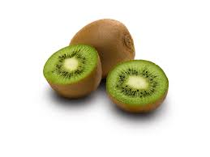

Qu'est ce que l'ADN ?
C'est le « code génétique » : l'ADN contient toutes les informations nécessaires au développement et au fonctionnement du corps.(acide désoxyribonucléique)

TP fait en classe
I.Principe
Nous avons extrait l'ADN d'un kiwi, car ses cellules sont riches en ADN. Le but étant de récupérer l'ADN contenu au coeur des cellules.Materiel à disposition
-1 kiwi
-1 Scalpel
-1 mortier+pilon
-1 éprouvette de 50 mL
-1 spatule longue
-des cure-dents
-1 bécher de 250mL
-1 erlenmeyer de 100mL
-1 entonnoir+papier filtre
Procédure opératoire
-Commencer par couper un kiwi en deux et l'éplucher-Récupérer dans le mortier la chair en la coupant en petit morceaux
(ne pas garder la partie centrale du kiwi)-Broyer la chair dans le mortier
-La transférer dans un bécher -Ajouter 50mL d'eau distillé -Ajouter 2 cuillères à cafés rases de NaCl -Ajouter une cuillère à café de détergente(liquide vaisselle) -Mélanger doucement avec une spatule pour obtenir une texture homogène